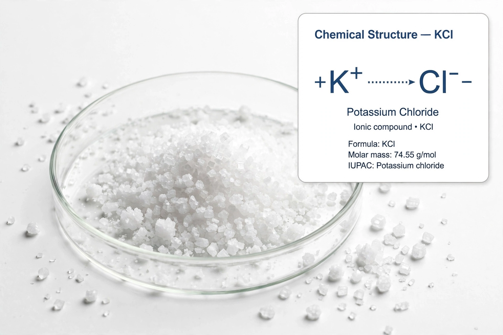

Potassium chloride (KCl, or potassium salt) is a metal halide salt composed of potassium and chlorine. It is odourless and has a white or colourless vitreous crystal appearance. The solid dissolves readily in water, and its solutions have a salt-like taste.
Occurs naturally as the mineral sylvite and in potash ores. Most KCl is produced from mined potash, mainly in Canada, Russia, and Belarus, by flotation or crystallisation.
The majority is used as fertiliser (muriate of potash). Medically it treats hypokalaemia, as oral or intravenous supplement. In food it is a low-sodium salt substitute. Industrially it is used in soaps, drilling fluids, and as the third drug in lethal injection protocols in some US states.
Generally safe at dietary levels; large doses cause hyperkalaemia, cardiac arrest, especially with renal impairment.
See also: Potash, Sodium chloride